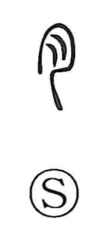

肉

Uncategorized
Kun: shishi | On: niku
meat ・ flesh ・ body ・ skin
Explanation
This character is a straightforward pictograph: it depicts a large cut of flesh, with the soft folds and layers clearly shown. From that concrete image it naturally came to mean meat or flesh, and by extension could also point to the human body and even the skin. The form 宍 is used as an alternate way to write the same word for meat.